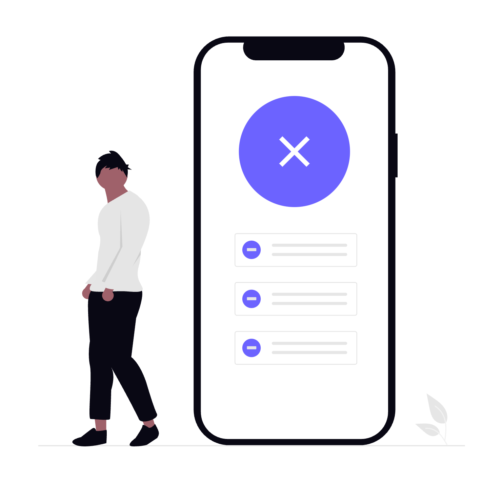
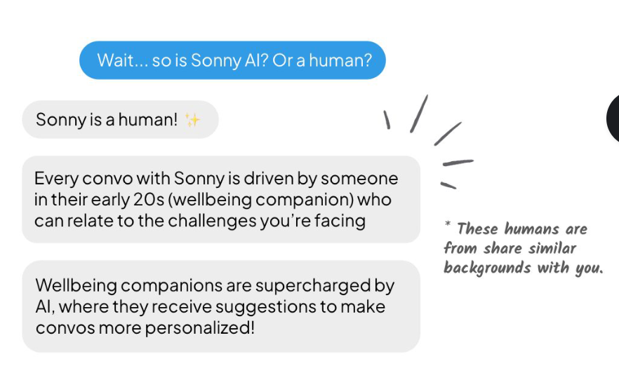
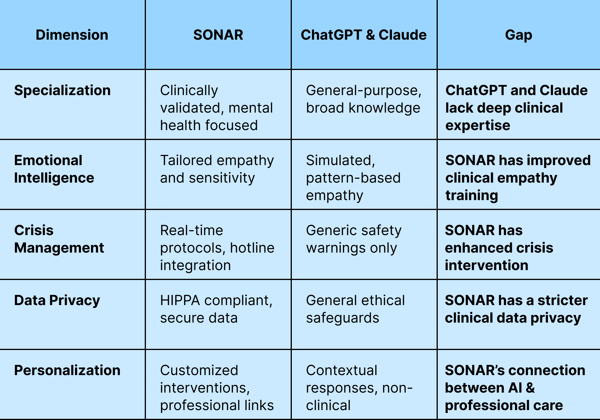
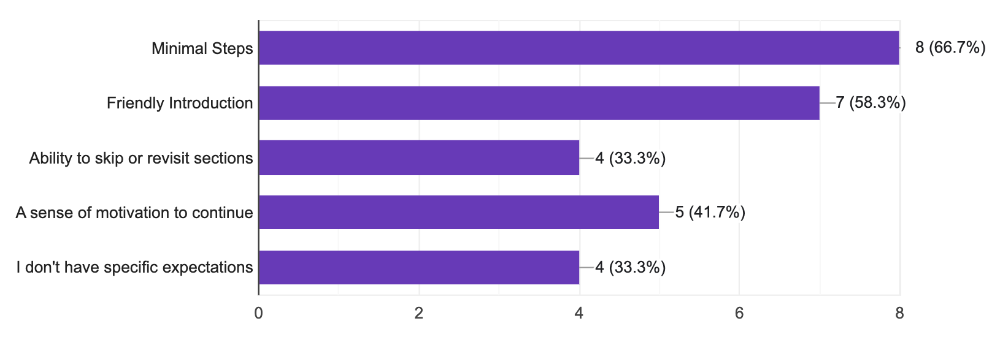
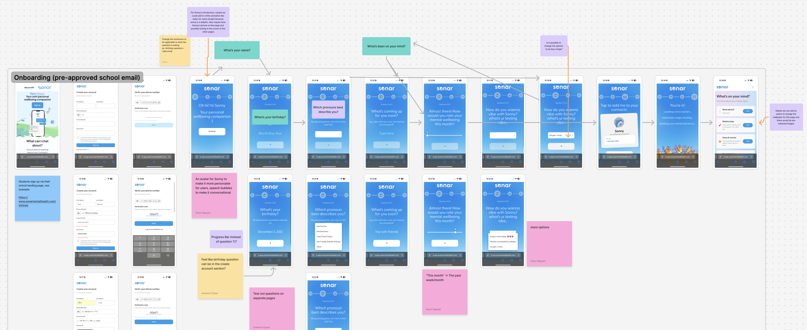
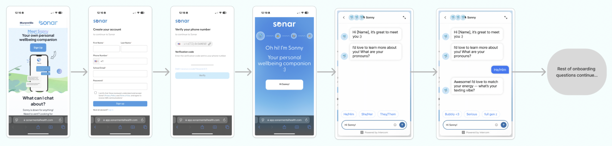

Project Overview
The Challenge
- Sonar faces high dropoff rates and low user retention, particularly during onboarding and initial conversations.
- Some users falsely believe that Sonny is a GPT chatbot rather than a human being using AI as a tool.
Goal
How can we increase user engagement and retention, and ensure that users don't make the misconception about Sonny being an AI bot?

Research

Prior Research
Sonar’s prior research on their onboarding process consisted of three reviews of conversations, four interviews, and eight other apps for their competitive analysis. One important discovery was that users do not know or understand who Sonny is, and what to expect from their conversations, making it difficult to feel interested. There is a misconception that Sonny is a GPT chatbot, which can often turns off users.

Gap Analysis
Based on our analysis of existing solutions, ChatGPT and Claude, we found that most of these AI chatbots are catered towards productivity and fact-finding. As such, we noticed a gap in the market which is the focus and intention on specifically supporting students and their mental health. Sonar is a service dedicated to filling that gap to ensure young students receive the help they may need.

Survey Insights
Based on a survey of 12 students, we found that in onboarding processes, users mainly value minimal steps, friendliness, and sense of motivation.
Design Process
Ideation
During the ideation phase, our team used Figma to share feedback and notes on Sonar's current onboarding process. By leaving comments and discussing design choices, we brainstormed ideas to enhance the user experience.

Brainstorming Changes to Onboarding Process
Key ideas:
- Move the onboarding process to within Sonny itself
- Tweak and skim out some onboarding questions
- Allow for customization
Prototyping
After ideation, we created multiple prototype iterations, refining the onboarding experience based on feedback.
Idea Rough Draft
Initial design concept created after ideation.

Iteration #1
Integrated the onboarding experience into the Sonny chat itself for a more personalized experience.


Iteration #2
Clarified that Sonny is a real person to address the misconception that it is a GPT chatbot, and specified when the onboarding process ends to let users know when they are transitioning to a conversation with a human being. Added a settings page that allows users to personalize their chat experience, including options to change the background color.


Iteration #3
Included a friendly introduction to Sonny and provided sample topics. Additionally, revised the disclaimer page by shortening it to encourage users to read it, and clarifying that Sonny is powered by trained peer supporters and AI rather than a licensed mental health professional.


Final Solution
Key Features
To achieve our goal of preventing user dropoff during the onboarding process, we implemented the following features:
Seamless In-Chat Onboarding
Changes the onboarding process from a separate multi-page process to one integrated directly within the Sonny chat, making the onboarding feel more natural and engaging.
Preventing GPT Chatbot Misconceptions
Through disclaimers, our new design reinforces to users that Sonny is a mix of AI and human support and not solely an AI GPT Chatbot.
Customization Access
Users can customize their settings such as background color choice, ensuring a more personalized and comfortable experience.
Meet The Team!
Vienna Dinh
UX Lead
Andrew Doan
Research Lead
Karen Nguyen
Tech Lead
Gena Younies
Business Lead